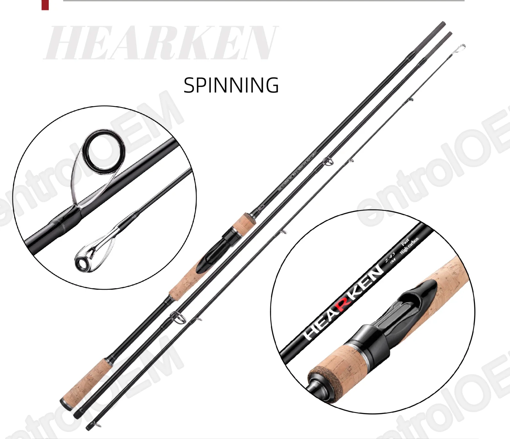

Lure Rod Selection Guide: Spinning vs Casting, Action and Lure Weight

A lure rod has one job: to cast and work an artificial bait with enough feel to detect a take and enough backbone to set the hook. This guide walks through the choices that actually change how the rod fishes.
Spinning or casting: start with how you want to fish
The first decision is the reel platform, because it changes the whole handle layout and the way you cast. A spinning rod uses a screw-down reel seat below a split grip, with the reel hanging under the blank. It handles light lures well, casts easily into wind and suits beginners. A casting rod uses a trigger seat and a full-length grip, with the reel on top. It gives more control and accuracy for heavier lures and faster hook sets, but needs practice to avoid backlash. One handle cannot serve both platforms well; they are built as two different tools.
Length: match it to the water you fish
Lure rod length usually sits between 1.98 and 2.40 m for general freshwater and light inshore use. Shorter rods give better accuracy in tight cover, under low branches and around docks, and are less tiring on long casts. Longer rods cast farther, keep line above wind and water, and are better for open banks and shorelines. If you fish a mix of situations, a middle length around 2.10 to 2.29 m is the safest single choice.
Action: fast for feel, moderate for treble hooks
Action describes where the blank bends. A fast action bends mostly near the tip and gives crisp sensitivity and a solid hook set, which suits single-hook soft plastics and jigs. A moderate or moderate-fast action bends deeper and is kinder to treble-hooked lures such as crankbaits and jerkbaits, where a stiff tip can pull hooks free. Extra-fast actions are specialised tools, not an upgrade for every situation.
Lure weight is a casting range, not a lifting limit
The lure rating on a rod is the range of artificial baits the blank is designed to cast. It is a dynamic load: the lure accelerates the tip and the blank stores and releases energy. It is not the weight of fish the rod can lift. Fishing in the middle of the stated range usually gives the best casting feel; going far below it loses distance and feel, while casting beyond it overloads the blank. If a supplier gives only a single number, ask whether it is a maximum or a mid-range value.
Power and line: keep the outfit balanced
Power describes resistance to bending and should match the lure weight and line class together. A light or medium-light rod with fine braid suits small soft plastics and finesse work; a medium-heavy or heavy rod with stronger braid suits big lures and heavy cover. Pair the rod with a reel whose spool carries the line class you need, and set drag according to the line. A balanced outfit is one where rod, reel, line and lure all sit in the same class.
Match the setup to the species
Different predators ask for different setups. Perch and small trout need a light rod with fine line and small lures. Bass and zander sit in the medium range with jigs and soft plastics. Pike and sea bass call for a stronger rod, a larger reel and a leader that resists teeth and structure. Treat any species recommendation as a starting point and adjust for the water, cover and lure size you actually use.
| Target | Rod power | Lure rating (guide) | Reel / line |
|---|---|---|---|
| Perch, small trout | Ultralight to light | Very light lures | 1000–2000 spinning / fine braid |
| Bass, zander | Medium to medium-light | Light to medium lures | 2500–3000 spinning / braid + leader |
| Pike, sea bass | Medium-heavy | Medium to heavy lures | 3000–4000 spinning or casting / braid + leader |
| Heavy cover | Heavy | Heavy lures | Casting reel / strong braid |
Guides, handle and finish matter on long sessions
Two rods with the same length and action can feel completely different in the hand because of their components. Guide quality affects friction and casting distance; guide placement affects how the blank loads. A comfortable grip and a reel seat that locks without hot spots reduce fatigue over a long day. For saltwater use, corrosion-resistant guides and hardware are essential. When comparing a quote, ask for the guide count and frame type, the reel seat model and the handle material instead of judging by the blank description alone.
How to verify a lure rod before you approve a range
For a private-label program, a specification sheet is only a starting point. Fit the intended reel, spool the intended line and fish the lures the rod is rated for. Check straightness with the guides aligned, feel where the blank bends under load, and confirm the finished weight and balance. Repeat the check on more than one sample, because consistency between rods matters as much as the performance of a single good one. Record the results as acceptance criteria so the next production run can be measured against the same standard.
Turn the research into a specification
If you are building a range under your own brand, we can help turn these choices into a repeatable rod and reel specification. Send us your target species, water type and quantities and we will come back with options.